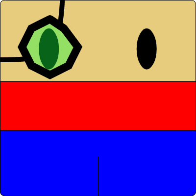
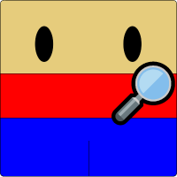
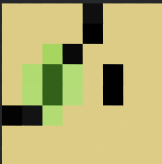
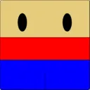

Projects

I started this bot about a year ago when Khancord's last swear filter bot had issues. Soon another server wanted to add the bot, and I rewrote parts of the bot to support being in multiple servers when it had initially only been designed for use in one. From there I just started adding more and more features.
Eventually Replit blocked Discord bots being run on their servers, which makes sense but it left me without a hosting provider. A friend of mine helped me out for a while and ultimately pointed me to Azure. This worked for a long time befure I ran out of student credits and ultimately had a huge fiasco trying to recover the bot's files.
After that, another friend started helping me out with a server they won in a giveaway and didn't expect to use. Today, the bot has tons of features and tons of capability. All for free.

I used DuckDuckGo for a long time as a search engine with no ads and no tracking. However I came across an article claiming that DuckDuckGo was sharing tracking data with Bing, making it pointless to use DuckDuckGo. I wasn't sure whether or not the article was legitimate, but either way I had heard about Searx and just needed an excuse to make my own.
So I started on Kestrogle, which acts as a proxy between you and the target search engine, and provides you the results sorted by relevancy to the most search engines.

Kestron-Tron Minecraft
Khancord had a Minecraft server hosted via Aternos, but we had the issue of people wanting to play when nobody who could turn on the server was online. And so I started to write a bot to keep the server online 24/7. However, the library I was using only supported up to 1.18.2, and the server was at the latest version - which was 1.19.1 at the time.
So I stopped work on it for many months, until I ended up checking back again and seeing 1.19.2 had finally been supported by Mineflayer, I started work on it again. This bot doesn't do much more than find materials, PVP, kill mobs, and isn't available to the public at the moment, but hopefully that'll change soon.

This was a project I started on a long time ago out of an interest in making my own radio station. Of course, this didn't work, however I did end up making a pretty neat website that can play music from Super Mario Odyssey based on the time of day or night it is. So if it's night, you'll hear calm relaxing music. If it's daytime, you're going to hear the more exciting tunes. (Assuming you have your device clock set correctly)
Khan Academy has these avatars, and they're really cool, but they're the same ones that have been on there for years. Then, they finally added new ones - but they were completely different, much more childlike, they severely lowered the requirements for all of the hard to achieve avatars, and removed user backgrounds.
This, needless to say, frustrated a lot of users. So I made a custom chromium browser to change your avatar to a custom one based on your team in one of the user contests. Years later, I decided to just add custom avatars altogether where you could set it to anything. At first I released this for
Microsoft Edge only since their store was free. However, later I was able to pay the fee and rereleased it on the Chrome store which pretty much any Chromium based browser can use instead of just Edge.

Bario Games
When I started growing enough in my skillset to make games on Khan Academy, I began making Bario games. My general rule of thumb was to try and make each one different with gameplay style and have no two alike. They are extremely cheesy (and a little cringy for me looking back at them) as they came from a time of my life when I was still figuring how not to be cheesy.

At first I started the channel with the sole purpose of posting a
single tutorial on how to use custom music on Khan Academy. Later, I started using it to host VODs from Twitch. Soon, I hope to start posting there regularly and with more purpose.

I don't stream extremely often, however occasionally I'll go live with a game or randomizer I'm playing. I hope to someday start doing it regularly and with more purpose.